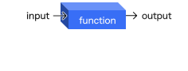
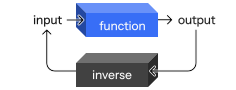
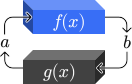
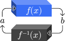
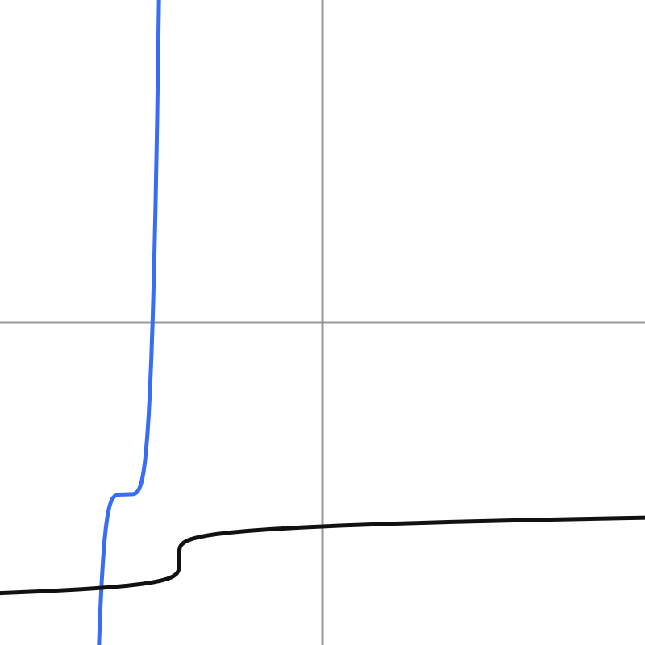
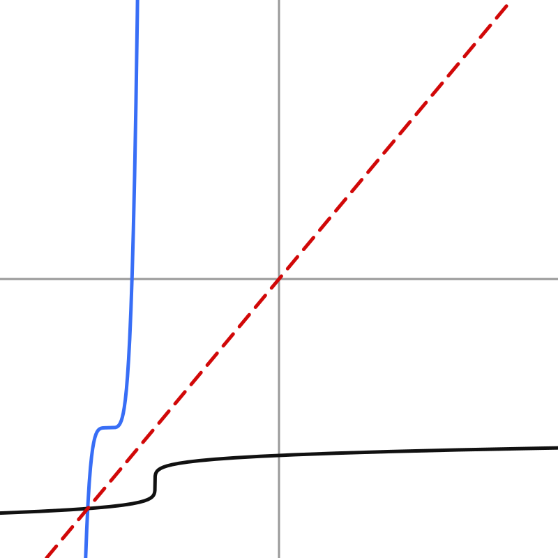
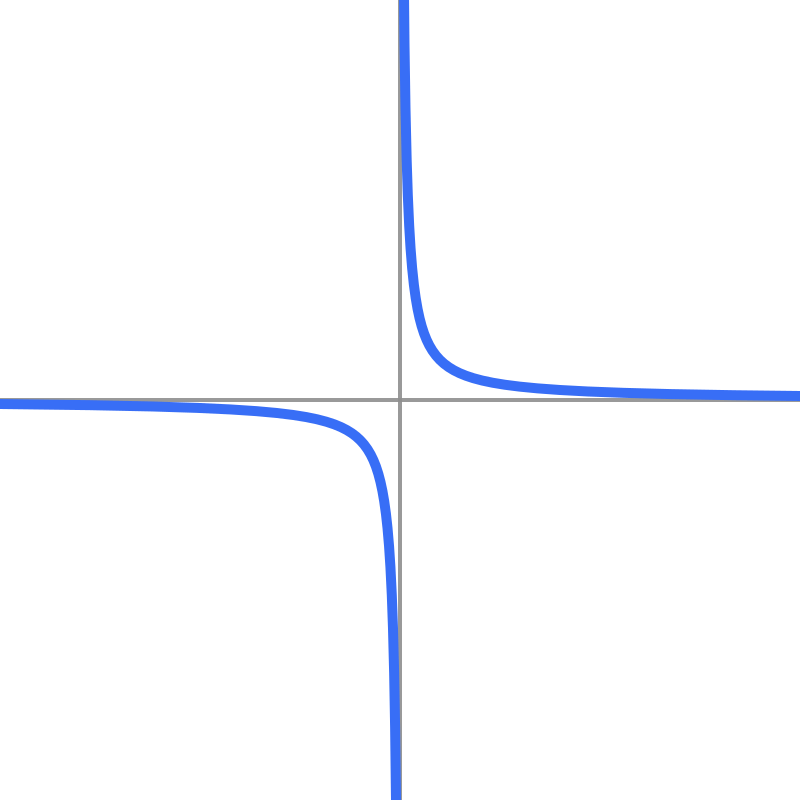
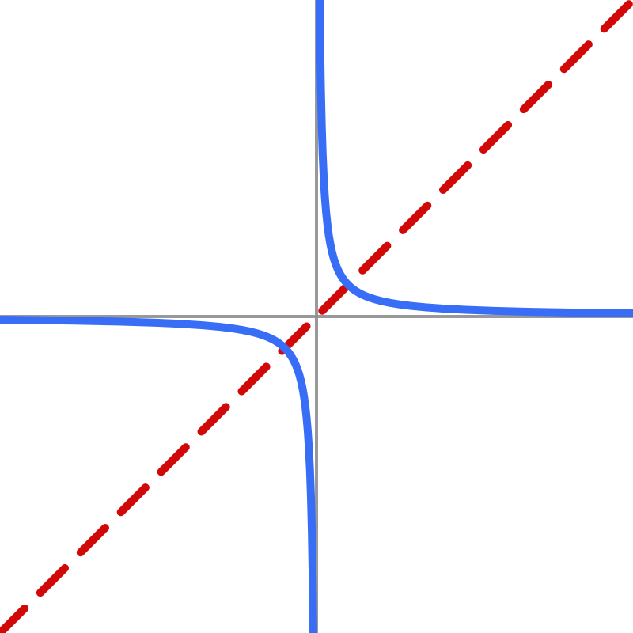

Write your name & answers on a sheet of paper.
something with f(x)=\#
??
How do you write \( g(f(k(x))) \) using composition notation?
??
Functions are machines.

An inverse function is a machine that UNDOES a function.
Functions are machines.

An inverse function is a machine that UNDOES a function.
... The volume of all boxes are \( V(x) = x^3/ 32 \), where the input \(x\) is the width of the sheet of cardboard necessary:
\( V(x) = 2\) ft\(^3\)
\( \frac{x^3}{32} = 2\)
\( x^3 = 2 \cdot 32\)
\( x^3 = 64 \)
\( \sqrt[3]{x^3} = \sqrt[3]{64} \)
\( x = 4 \) ft
\( V(x) = 3\) ft\(^3\)
\( \frac{x^3}{32} = 3\)
\( x^3 = 3 \cdot 32\)
\( x^3 = 96 \)
\( \sqrt[3]{x^3} = \sqrt[3]{96} \)
\( x \approx 4.6 \) ft
\( V(x) = 4\) ft\(^3\)
\( \frac{x^3}{32} = 4\)
\( x^3 = 4 \cdot 32\)
\( x^3 = 128 \)
\( \sqrt[3]{x^3} = \sqrt[3]{128} \)
\( x \approx 5.0 \) ft
How can we generalize this procedure? Let's rewrite the original function as: \(f = x^3/32\), and solve for \(f\).
\( \dfrac{x^3}{32} = y\)
\( x^3 = 32y \)
\( \sqrt[3]{x^3} = \sqrt[3]{32y} \)
\( x= \sqrt[3]{32y} \)
Now let's check to make sure this formula works! Let's plug in the same values we did earlier, and see if we get the same answers.
\( x = \sqrt[3]{32y}\)
\( y = 2\)
\( x = \sqrt[3]{32( 2)}\)
\(\phantom{x} = 4 \phantom{.} \checkmark\)
\( y =3 \)
\( x = \sqrt[3]{32( 3)}\)
\(\phantom{x} \approx 4.6 \phantom{.} \checkmark\)
\( y =4 \)
\( x = \sqrt[3]{32(4 )}\)
\(\phantom{x} \approx 5.0 \phantom{.} \checkmark\)
two functions \(f(x)\) and \(g(x)\) are inverses of each other when \( f(a)=b \phantom{.}\) means \(\phantom{.} g(b)=a\), and vice versa, for any \(a\) and \(b\)

Instead of vaguely saying \(f(x)\) and \(g(x)\), we write \(f(x)\) and \(f^{-1}(x)\)!
\(f^{-1}\) is NOT an exponent; this is the notation for inverse, which is read "f inverse."
Rename the equation \(f(x)=...\) to \(y=...\)
to make it easier to work with
Solve for \(x\) (in terms of \(y\))
Make a NEW equation by swapping \(x\) and \(y\)
Rename the new equation \(y=...\) to \(f^{-1}(x)=...\)
Check your answer

To verify that your functions are actually inverses, you must check:
$$ (f^{-1} \circ {\color{#386ef6} f})(x) = x $$
AND
$$ ({\color{#386ef6}f}\circ f^{-1} )(x) = x $$
Find a formula for the inverse of \( f(x) = (x+11)^5-8\).
\( f^{-1} (x) = \sqrt[5]{x + 8} - 11 \)
Check \(f\circ f^{-1}\) \(\phantom{.} \checkmark\)
Check \( f^{-1} \circ f\) \(\phantom{.} \checkmark\)
Find a formula for the inverse of \( f(x) = \dfrac{1}{x}\).
\( f^{-1} (x) = \dfrac{1}{x} \)
Check \(f\circ f^{-1}\) \(\phantom{.} \checkmark\)
Check \( f^{-1} \circ f\) \(\phantom{.} \checkmark\)


The graph of the inverse \(f^{-1}(x)\) will look like \( f(x)\) flipped across the diagonal (\(x=y\)).
This is because any point \((a,b)\) for \(f(x)\) will have a corresponding point \((b,a)\) for \(f^{-1}(x)\). Basically, we swap all of our ordered pairs; we can also think of this as swapping our axes.
ADD MORE
This is the graph for Ex. 4, \(f(x) = \dfrac{1}{x}\).
Explain why the function is its own inverse, based on the graph.

This is the graph for Ex. 4, \(f(x) = \dfrac{1}{x}\).
Explain why the function is its own inverse, based on the graph.
It is symmetrical across the diagonal, so its inverse is itself!

Use the graph of \(f(x)\) to evaluate \(f^{-1}(x)\) at the given values.
\( f^{-1} (0) = \)
\( -1 \)
\( f^{-1} (1) = \)
\( 1\)
\( f^{-1} (4) = \)
\( 3\)
Let's think about putting on socks and shoes.
If I want to undo that, what do I do?
-> 3.5 homework